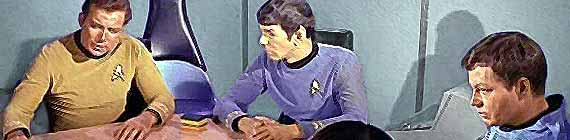

| Editores
| |
 | Salvador
Nogueira, 28, jornalista cientfico,
colaborador ocasional da imprensa especializada em televiso e fico cientfica
e criador do Trek Brasilis. Estudou jornalismo da USP (Universidade
de So Paulo) e desde sempre f inveterado de Jornada nas Estrelas.
Mas sempre guarda um
tempinho para acompanhar as partidas do So Paulo FC ou ouvir um pouco
de boa MPB ou clssicos do rock. Guarda similar entusiasmo pelo progresso da explorao
espacial e espera ansiosamente a misso que levar o homem a Marte. É
autor dos livros Rumo
ao infinito, publicado em 2005 em Editora Globo, e Conexão
Wright-Santos Dumont, lançado em 2006 pela Record.
Principais funes no site: Salvador webmaster, colunista de Enterprise e reviewer de Srie Clssica, Srie Animada, A Nova Gerao e Enterprise. Contato: snogueira@trekbrasilis.net |
Fernando Penteriche, 30, é jornalista e atualmente trabalha na Diretoria de Comunicação da Prefeitura de São Caetano do Sul, em São Paulo. Na internet, foi um dos criadores da Base Estelar Nexus, um dos sites pioneiros em divulgar notcias do universo de Jornada nas Estrelas no Brasil. Desde 2000, editor do Trek Brasilis. Principais funes no site: Fernando webmaster, coordenador da equipe, articulista, editor da capa do site e responsvel pela newsletter semanal do TB. Contato: tb@trekbrasilis.net | |
| |
 | Daniel Sasaki, 24, jornalista formado pela PUC-Campinas. Comeou a acompanhar Jornada pelas reprises da Srie Clssica na Rede Record, em 1994. Apaixonou-se por Voyager assim que descobriu que a nave-tema seria comandada por uma mulher. Alm do universo trekker, tambm interessa-se por Aviao Comercial, Antropologia e Histria. Daniel é autor do livro Pouso Forçado (Ed. Record), que traz os bastidores do fechamento da Panair do Brasil pelo governo militar em 1965. Principais funes no site: Daniel Sasaki colunista e reviewer dos episdios de Voyager, além de cuidar da paginao de textos e imagens. Contato: danielsasaki@trekbrasilis.net |
Co-editores
| |
| Mariana
Pedroso Corra da Silva, 31, formada em engenharia civil pela
Unicamp, trabalha com obras e faz mestrado na mesma universidade. apaixonada
por Deep Space Nine, mas tambm gosta muito de "Farscape" e "Arquivo-X",
alm de tantas outras sries. Desde o final de 2003, mora na Croácia.
Principais funes no site: Mariana responsvel pelas operaes do Frum do TB e pelas sees de publicao de Fan-Fics e Stiras. Contato: mariana@trekbrasilis.net | |
 | Fernando
Rodrigues da Silva, 30, engenheiro qumico especializado em gesto
ambiental atuante em Campinas, escritor de contos nas horas vagas. Apaixonado
por cinema, em especial fico cientfica. Cresceu sendo "educado" por autores
como Asimov, Clarke e Bradbury. Nas horas vagas, tenta acompanhar suas sries
favoritas, DS9, "C.S.I.", "Seinfeld". Principais funes no site: Fernando o colunista de A Nova Gerao e o responsvel pela seo do site ligada ao Universo Expandido de Jornada, além de moderador do Fórum do site. Contato: ferrsi@trekbrasilis.net |
|
Colaboradores
| |
|
Luiz Felipe do Vale Tavares, 28, advogado, formado em Direito pela Universidade Paulista (UNIP) e ps-graduado em Direito Processual Civil na Pontifcia Universidade Catlica de So Paulo (PUC-SP). tambm professor de Direito na UNIFIEO e atua profissionalmente na capital paulista. Entre seus interesses esto Jornada nas Estrelas, cinema, literatura e classic rock. Principais funes
no site: Luiz Felipe o colunista da Srie Clssica e o reviewer de
DVDs do TB. | |
| |
| Ralph
Antonio Pinheiro Cavalcante, 45, é formado em engenharia
elétrica-eletrotécnica pela UFRJ e funcionário público
federal. Nascido no Rio de Janeiro, é casado e mora em Castanhal, Pará.
Fã de Jornada nas Estrelas desde a época da exibição
na TV Record, não deixa também de curtir um bom rock progressivo
e MPB, além de seus Flamengo e Paysandu. Principais funções no site: Ralph Pinheiro colabora diariamente com notícias para a capa do site. Contato: ralph@trekbrasilis.net | |
|
|
|
Nvea Guimares Doria Bacharel em Letras Portugus-Espanhol
pela UERJ, onde cursa o mestrado em Letras/Lingstica. Sua maior pretenso
profissional desde a infncia, no entanto, ser escritora. Trekker por
influncia do pai e da av paterna, f de DS9 e da Srie Clssica.
Assumidamente viciada em TV, suas sries favoritas so: Homicide: Life on the
Street, Ally McBeal, Boston Legal, Gilmore Girls, The 4400 e
Battlestar Galactica (2003). F de anime e dublagem em geral, j foi
administradora e moderadora do Frum DublaNet, no qual, atualmente, comanda a
seo de entrevistas, intitulada Mesa Redonda. Principais funções no site: Nvea Doria colabora diariamente com notícias para a capa do site. Contato: ndoria@trekbrasilis.net |
| |
 | Luiz
Cludio Castanheira dos Santos, 37, mestre em engenharia mecnica
e professor de cursos preparatrios no Rio de Janeiro. Organizou, por mais de
quatro anos, encontros mensais gratuitos e assistenciais de Jornada nas Estrelas
em sua cidade (Reunio-Trekker-RJ). Grande f de Jornada, em particular
de Deep Space Nine. Gosta tambm de msica (Rock e Fusion principalmente),
cinema (clssicos em todas as lnguas e os novos filmes que honram tal tradio
e esprito) e TV (especialmente quando escrita por David E. Kelley). Principais funes no site: Luiz Castanheira colunista e reviewer dos episdios de Deep Space Nine. Contato: lccs1701@trekbrasilis.net |
|
Leandro
Martins Pinto Magalhes, 33, analista de sistemas de uma indstria
paulista de mdio porte, e mora em So Paulo. Seu interesse por Jornada nas
Estrelas, alm de cinema e tambm animao em geral, vem desde o incio dos
anos 80, mas sua participao mais ativa no fandom tem sido de 1998 para c, atravs
de diversos grupos de discusso, e como colaborador do frum Jornada
BBS e a partir do final de 2003, do Trek Brasilis. Alguns de seus
outros interesses tambm incluem explorao espacial, Histria e assuntos afins,
alm de tambm escrever contos nas horas vagas, como a fan-fic Earth,
DC. | |
 | Cludio
Silveira, 45, nasceu no Rio e v Jornada desde os oito
anos. formado em Filosofia e em Cincias Sociais, nesta ltima com mestrado
e doutorado pela Unicamp. Sua vida lecionar no ensino mdio e superior e conduzir
pesquisas. No mais, ajuda Luiz Castanheira a tocar as reunies trekkers no Rio,
escreve para o TB e torce (muito!) pelo Flamengo. Principais funes no site: Cludio Silveira o colunista dos Filmes de Jornada para o TB. Contato: claudio@trekbrasilis.net |
| Carlos
Santos, 37, analista de suporte e atua na rea de manuteno
e suporte a servidores de rede. Casado e pai de uma filha, morador do Rio de Janeiro
e torcedor do Flamengo, Carlos assiste a Jornada nas Estrelas desde sua
estria no Brasil pela TV Tupi. F de fico-cientfica em geral, tem tambm interesse
por histria, aviao e navegao, alm de Rock e MPB. Principais funes no site: Carlos Santos o reviewer dos episdios da Srie Clssica e da Série Animada do TB. Contato: carlos@trekbrasilis.net | |
 |
Gustavo Leo, 36, mora em Belo Horizonte (MG). Um dos mais profundos conhecedores de Jornada nas Estrelas no Brasil e no exterior, sendo um dos editores do prestigiado site americano TrekWeb. Principais funes no site: Gustavo um dos colaboradores regulares do site e fornecedor de notícias através de seus inúmeros contatos com o fandom norte-americano de Jornada. Contato: gleao@trekbrasilis.net |
|
| |
| Alexandre
Bortuluci, 30, Arquiteto e Urbanista formado pela Universidade
Federal do Esprito Santo, ps-graduado em Design e mora h mais de 20 anos em
Vitria, cidade que considera a Oitava Maravilha do Mundo. F entusiasta de Jornada,
no deixa de assistir nenhum episdio de qualquer uma das sries, tendo um carinho
especial por Deep Space Nine. Entre seus inmeros interesses, tem-se destaque
o apreo de torcer para o Flamengo e ouvir Pet Shop Boys. Principais funes no site: Alexandre Bortuluci já foi ombudsman do site e atualmente colabora com as resenhas da Série Clássica. Contato: alexandre@trekbrasilis.net | |